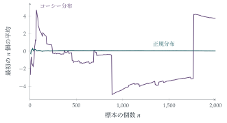

STEP III 1995、第12問
先に進む前に問題を読んでおこう。問題は STEP Support Programme の問題データベースにある： step.maths.org/questions/95-s3-q12
導入
多数の測定値の平均をとれば、偶然誤差は打ち消し合い、平均は真の値に落ち着いていく。この大数の法則（law of large numbers）はあらゆる統計学の土台である。しかし、そこには隠れた仮定がある。測定値が有限な平均をもたなければならないのである。この問題では、ごく自然な確率変数、すなわち独立な2つの標準正規確率変数の比を構成するが、これは平均をまったくもたない。その平均値は決して落ち着かない。実際、それを100万個平均したものは、1個だけのものとまったく同じ分布をもつのである。
これがコーシー分布（Cauchy distribution）である。その確率密度関数は無害な釣鐘形に見えるが、裾が非常に重いため、ときおり現れる巨大な値がどんな平均をも支配してしまう。この問題では、美しい幾何学的議論によってこの分布を導く。座標の比は直線の傾きであり、放射対称性によってその直線の角度は一様に分布するのである。
取りかかる前に
\((U, V)\) が、確率密度が原点からの距離だけに依存するような確率的な点であるとき、原点からその点へ引いた直線が軸となす角 \(\Theta\) について何がいえるか。
平面を回転しても確率密度は変わらないので、どの方向も同様に確からしい。すなわち角 \(\Theta\) は \([0, 2\pi)\) 上の一様分布に従う。そして \(\frac UV\) は方向だけに依存し、距離には依存しない。
順を追って解く
段階 1 同時確率密度関数
\(X\) と \(Y\) は独立であるから、それらの同時確率密度関数（joint density）はそれぞれの確率密度関数の積である。 \[\mathrm{f}(x, y) = \frac{1}{\sqrt{2\pi}}e^{-x^2/2}\cdot\frac{1}{\sqrt{2\pi}}e^{-y^2/2} = \frac{1}{2\pi}e^{-\frac12(x^2 + y^2)}.\] これは \(x\) と \(y\) に、原点からの距離の2乗である \(x^2 + y^2\) を通してのみ依存する。つまり、確率密度は原点を中心とする円の上で一定である。これが「放射対称（radially symmetrical）」の意味である。
段階 2 対称性を利用する
\(\frac UV < k\) となる場合は、\(V\) の符号に応じて2通りある。\(180^\circ\) の回転 \((u, v) \mapsto (-u, -v)\) によって、これらはどのように結びつくか。
\(\frac UV < k\) とは、\(V > 0\) かつ \(U < kV\) であるか、または \(V < 0\) かつ \(U > kV\) であることを意味する。回転 \((u, v) \mapsto (-u, -v)\) は1つ目の領域を2つ目の領域に写し、確率密度を保つ。したがって両者の確率は等しく、 \[\mathrm{P}\Bigl(\frac UV < k\Bigr) = 2\mathrm{P}(U < kV, V > 0). \qed\]
段階 3 角度
\(u\) を横軸、\(v\) を縦軸とする平面に領域 \(\{V > 0, U < kV\}\) を図示せよ。これは原点を頂点とする扇形の領域である。その角の大きさはいくらか。
領域 \(V > 0\) は上半平面である。原点を通る直線 \(u = kv\) は、正の \(v\) 軸と角 \(\arctan k\) をなす（\(k > 0\) のときは正の \(u\) の側に傾く）。上半平面のうちこの直線より左側の部分は、角 \(\frac\pi2 + \arctan k\) の扇形の領域である。放射対称性により、扇形の領域の確率はその角を \(2\pi\) で割ったものであるから、 \[\mathrm{P}\Bigl(\frac UV < k\Bigr) = 2\cdot\frac{\frac\pi2 + \arctan k}{2\pi} = \frac12 + \frac1\pi\arctan k.\] これを \(k\) で微分すると、確率密度関数 \[\mathrm{g}(k) = \frac{1}{\pi(1 + k^2)}. \qed\] が得られる。
振り返り
独立な正規分布は放射対称である。 2つの正規分布の確率密度関数の積は距離だけに依存する。
比は方向を表す。 \(\frac UV\) は点の角度だけに依存し、その角度は一様分布に従う。
扇形の領域の確率。 放射対称性があれば、扇形の領域の確率はその角に比例する。
背後にある数学
平均が存在しない
コーシー分布の平均は \(\int_{-\infty}^\infty\frac{k}{\pi(1 + k^2)}\,\mathrm{d}k\) となるはずであるが、\(\int_0^K\frac{k}{1 + k^2}\,\mathrm{d}k = \frac12\ln(1 + K^2) \to \infty\) である。この積分は収束（converge）せず、平均は存在しない。（対称性から答えは \(0\) だと思うかもしれないが、正の部分も負の部分もともに無限大であり、\(\infty - \infty\) には値がない。）分散も無限大である。
さらに悪いことに、独立な \(n\) 個のコーシー確率変数の平均は再びコーシー分布に従い、しかもまったく同じ分布をもつ。（これを確かめる1つの方法は、特性関数（characteristic function）\(\mathrm{E}(e^{itX}) = e^{-|t|}\) を用いるものである。）したがって平均をとってもまったく役に立たない。100万個の測定値の平均は、1個の測定値より少しも信頼できないのである。図 12.22.1 はその様子を示している。正規分布の標本の逐次平均は落ち着いていくが、コーシー分布の標本の逐次平均は、ときおり現れる巨大な値に揺さぶられて、いつまでもふらつき続ける。

コーシー確率変数はどこから現れるか
一様に無作為な方向に向けた懐中電灯で壁を照らすと、壁に映る光点の位置はコーシー分布に従う。物理学では、同じ確率密度関数がローレンツ関数（Lorentzian）とよばれ、スペクトル線や共鳴ピークの形を記述する（第 11.1 節 と比較せよ）。金融の分野では、正規分布によるモデルが大幅に過小評価してしまうときおりの暴落をモデル化するために、コーシー分布のような裾の重い分布が用いられる。統計学にとっての教訓は深刻である。平均や分散に基づく手法は裾の重いデータに対しては破綻し、中央値（コーシー分布に対してもまったく問題なく振る舞う）を用いるなどの頑健な手法が必要となるのである。
この分布は1824年にポアソン（Siméon Denis Poisson）によって研究され、彼はそれが大数の法則を満たさないことに気づいていた。コーシー（Augustin-Louis Cauchy）は1853年、最小二乗法をめぐるビエネメ（Irénée-Jules Bienaymé）との公開論争の中でこの分布に出会った。コーシーはこれを用いて、誤差の裾が重い場合には最小二乗法が劣った方法になりうることを示したのである。名前はコーシーに定着したが、これは Stephen Stigler が「スティグラーの名祖の法則」とよぶものの一例である。すなわち、科学上の発見は最初の発見者の名前ではよばれない、という法則である。
思考のスキル
平均や分散を用いる前に、それを定義する積分が収束することを確かめよ。対称性があっても、発散する積分が \(0\) になるわけではない。
大学では、可積分性の条件が確率論のあらゆる定理の一部となっている。大数の法則には有限な平均が、中心極限定理（第 12.24 節）には有限な分散が必要である。コーシー分布は、それらの条件が成り立たないときの標準的な反例である。
次の一歩
懐中電灯。 長くまっすぐな壁から距離 \(1\) の位置にある懐中電灯が、壁への垂線と角 \(\Theta\) をなす方向を向いている。ただし \(\Theta\) は \((-\frac\pi2, \frac\pi2)\) 上の一様分布に従う。光点の位置 \(\tan\Theta\) がコーシー分布に従うことを示せ。
逆数。 \(C\) がコーシー分布に従うならば、\(\frac1C\) もコーシー分布に従うことを示せ。（ヒント：\(\frac UV\) と \(\frac VU\)。）
中央値はうまく働く。 コーシー分布の中央値は \(0\) であり、四分位数は \(\pm1\) であることを示せ。
半径と角度。 \(X\), \(Y\) を独立な標準正規確率変数とするとき、極座標に変換することにより、\(R^2 = X^2 + Y^2\) が平均 \(2\) の指数分布に従い、かつ角度と独立であることを示せ。（これは正規乱数を生成するボックス＝ミュラー法の基礎である。）
さらに学ぶために
Geoffrey Grimmett & Dominic Welsh, Probability: An Introduction (Oxford University Press)。確率変数の変換について。
Nassim Nicholas Taleb, The Black Swan (Penguin)。邦題『ブラック・スワン』。裾の重い分布とそれがなぜ重要なのかを、一般読者向けに解説している。
Stephen Stigler, The History of Statistics (Harvard University Press)。コーシーとビエネメの論争も扱っている。